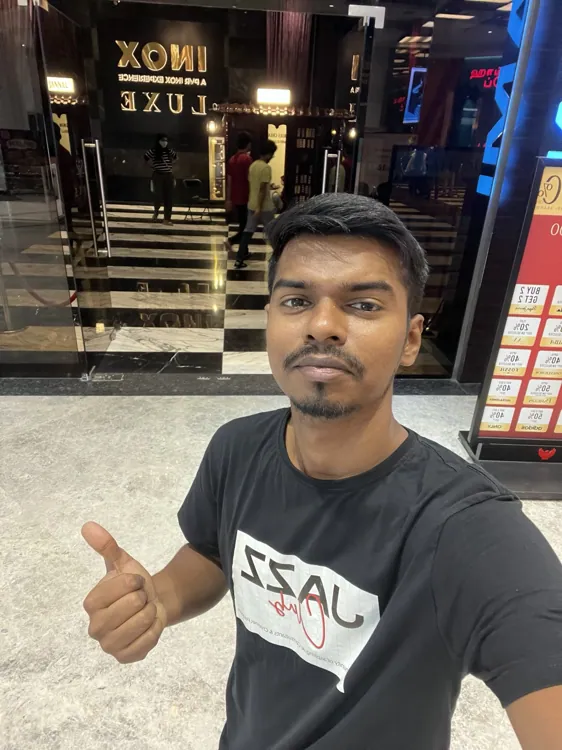

STEP 01 — START HERE
Start with a photo that actually looks like you.
Use a clear portrait with your real hairstyle, skin tone and facial features. A second photo can help preserve details the main portrait misses.
MY TIP Use the photo as the identity reference, not the art-style reference.
